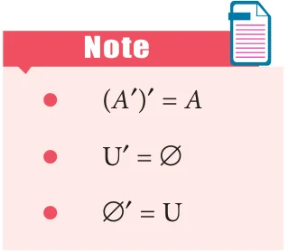
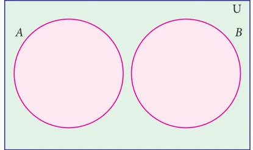
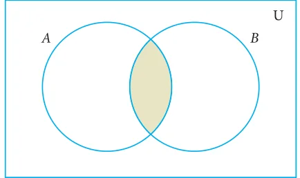
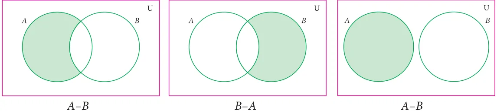
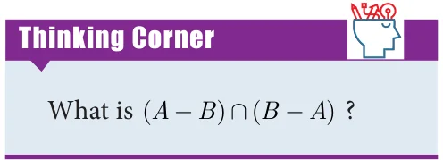
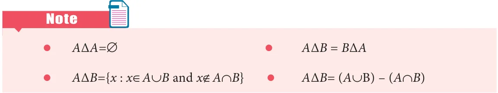
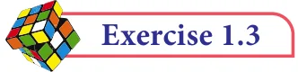
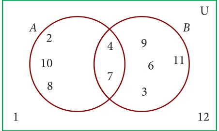

<!DOCTYPE html>
<html lang="en">
<head>
<meta charset="UTF-8">
<meta name="viewport" content="width=device-width,initial-scale=1">
<title>1.5 Set Operations — Set Language</title>
<meta name="description" content="Class 9 Mathematics · Set Language · 1.5 Set Operations">
<link rel="icon" href="data:image/svg+xml,<svg xmlns='http://www.w3.org/2000/svg' viewBox='0 0 100 100'><text y='.9em' font-size='90'>📘</text></svg>">
<link rel="stylesheet" href="../../../assets/book.css">
<link rel="stylesheet" href="https://cdn.jsdelivr.net/npm/katex@0.16.11/dist/katex.min.css" crossorigin="anonymous">
</head>
<body>
<header class="topbar">
<div class="topbar-in">
  <div class="crumb">
    <span class="c1"><a href="../../../index.html">Library</a> · <a href="../../index.html">Class 9 Mathematics</a></span>
    <span class="c2">Set Language · 1.5 Set Operations</span>
  </div>
  <a class="tb-btn" data-nav="prev" href="../../01-set-language/06-exercise-1.2/index.html" title="Exercise 1.2">←</a>
  <details class="drawer"><summary class="tb-btn" title="Sections in this chapter">☰</summary>
<div class="drawer-panel"><div class="dh">Set Language</div><a href="../01-chapter-opener/index.html">Chapter opener; 1.1 Introduction</a><a href="../02-set-1.2/index.html">1.2 Set</a><a href="../03-representation-of-a-set-1.3/index.html">1.3 Representation of a Set</a><a href="../04-exercise-1.1/index.html">Exercise 1.1</a><a href="../05-types-of-sets-1.4/index.html">1.4 Types of Sets</a><a href="../06-exercise-1.2/index.html">Exercise 1.2</a><a href="../07-set-operations-1.5/index.html" aria-current="page">1.5 Set Operations</a><a href="../08-exercise-1.3/index.html">Exercise 1.3</a><a href="../09-properties-of-set-operations-1.6/index.html">1.6 Properties of Set Operations</a><a href="../10-exercise-1.4/index.html">Exercise 1.4</a><a href="../11-distributive-property-1.6.3/index.html">1.6.3 Distributive Property</a><a href="../12-de-morgan-s-laws-1.7/index.html">1.7 De Morgan’s Laws</a><a href="../13-exercise-1.5/index.html">Exercise 1.5</a><a href="../14-application-on-cardinality-of-sets-1.8/index.html">1.8 Application on Cardinality of Sets:</a><a href="../15-exercise-1.6/index.html">Exercise 1.6</a><a href="../16-exercise-1.7/index.html">Exercise 1.7</a><a href="../17-summary/index.html">Points to Remember</a><a href="../18-ict-corner/index.html">ICT Corner 1</a></div></details>
  <a class="tb-btn" data-nav="next" href="../../01-set-language/08-exercise-1.3/index.html" title="Exercise 1.3">→</a>
  <button class="tb-btn" data-theme-toggle title="Toggle light / dark" aria-label="Toggle light or dark theme">◐</button>
</div>
<div class="progress"><span style="width:4.9%"></span></div>
</header>
<main class="wrap">
<div class="sec-head">
  <p class="eyebrow"><a href="../index.html">Chapter 1 · Set Language</a></p>
  <h1>1.5 Set Operations</h1>
  <p class="sec-meta">Textbook pages 12–18 · 28 figures</p>
</div>
<article class="prose">
<p>We started with numbers and very soon we learned arithmetical operations on them.</p>
<p>In algebra we learnt expressions and soon started adding and multiplying them as well,</p>
<p>writing (x +2),(x-3) etc. Now that we know sets, the natural question is, what can we do with sets, what are natural operations on them ?</p>
<p>When two or more sets combine together to form one set under the given conditions,</p>
<p>then operations on sets can be carried out. We can visualize the relationship between sets and set operations using Venn diagram.</p>
<p>John Venn was an English mathematician. He invented Venn diagrams which pictorially represent the relations between sets.Venn diagrams are used in the field of Set Theory, Probability, Statistics, Logic and Computer Science.</p>
<h3 id="s-1-5-1-complement-of-a-set">1.5.1 Complement of a Set</h3>
<p>The Complement of a set A is the set of all elements of U (the universal set) that are not in A. It is denoted by A ' or \(A^{c}\). In symbols A ' = {x : \(x \in U\), \(x \notin\) A}</p>
<h3 id="s-venn-diagram-for-complement-of-a-set">Venn diagram for complement of a set</h3>
<figure class="fig"><figcaption>Fig. 1.4 Fig. 1.5</figcaption></figure>
<figure class="fig"></figure>
<p>A (shaded region) A ' (shaded region)</p>
<p>For example, If \(U =\) {all boys in a class} and A= {boys who play Cricket}, then complement of the set A is A ' = {boys who do not play Cricket}.</p>
<figure class="fig"></figure>
<figure class="fig side-fig"></figure>
<p>If \(U =\) {c, d, e, f, g, h, i, j} and \(A =\) { c, d, g, j} , find A ' .</p>
<h4 class="callout-h" id="s-solution">Solution</h4>
<p>\(U =\) {c, d, e, f, g, h, i, j}, \(A =\) {c, d, g, j} A ' ={e, f, h, i}</p>
<h3 id="s-1-5-2-union-of-two-sets">1.5.2 Union of Two Sets</h3>
<p>The union of two sets A and B is the set of all elements which are either in A or in B or</p>
<p>in both. It is denoted by \(A \cup B\) and read as A union B. In symbol, \(A \cup B =\) {x : \(x \in A\) or \(x \in\) B}</p>
<h3 id="s-the-union-of-two-sets-can-be-represented-by-venn-diagram-a">The union of two sets can be represented by Venn diagram as given below</h3>
<figure class="fig"><figcaption>Fig. 1.6 Fig. 1.7</figcaption></figure>
<figure class="fig"></figure>
<p>Sets A and B have common elements Sets A and B are disjoint</p>
<p>For example,</p>
<p>If P ={Asia,Africa, Antarctica, Australia} and \(Q =\) {Europe, North America, South America}, then the union set of P and Q is \(P \cup Q =\) {Asia, Africa, Antartica, Australia, Europe, North America, South America}.</p>
<figure class="fig wide"></figure>
<figure class="fig"></figure>
<figure class="fig side-fig"></figure>
<p>If P={m, n} and Q= {m, i, j}, then, represent P and Q in Venn diagram and hence find \(P \cup Q\).</p>
<h4 class="callout-h" id="s-solution">Solution</h4>
<p>Given P={m, n} and Q= {m, i, j} From the venn diagram, \(P \cup Q={n\), m, i, j}. Fig. 1.8</p>
<h3 id="s-1-5-3-intersection-of-two-sets">1.5.3 Intersection of Two Sets</h3>
<p>The intersection of two sets A and B is the set of all elements common to both A</p>
<p>and B. It is denoted by \(A \cap B\) and read as A intersection B. In symbol , \(A \cap B={x\) : \(x \in A\) and \(x \in\) B}</p>
<figure class="fig side-fig"></figure>
<h3 id="s-intersection-of-two-sets-can-be-represented-by-a-venn-diag">Intersection of two sets can be represented by a Venn diagram as given below</h3>
<p>For example,</p>
<div class="mathblock"><p>If \(A = {1\), 2, 6}; \(B = {2\), 3, 4}, then \(A \cap B = {2}\)</p></div>
<p>because 2 is common element of the sets A and B. Fig. 1.9</p>
<figure class="fig"></figure>
<p>Let \(A =\) {x : x is an even natural number and \(1&lt; x \le 12}\) and</p>
<p>\(B =\) { x : x is a multiple of 3, \(x \in N\) and \(x \le 12}\) be two sets. Find \(A \cap B\).</p>
<h4 class="callout-h" id="s-solution">Solution</h4>
<p>Here \(A = {2\), 4, 6, 8, 10, 12} and \(B = {3\), 6, 9, 12}</p>
<div class="mathblock"><p>\(A \cap B = {6\), 12}</p></div>
<p>Example 1.13 Note � \(A \cap A = A\) � \(A \cap \emptyset = \emptyset\)</p>
<p>If \(A = {2\), 3} and \(C =\) { }, find \(A \cap C\). z A \(\cap U = A\) where A is any subset Solution of universal set U</p>
<p>There is no common element and hence \(^{z} A \cap B \subseteq A\) and \(A \cap B \subseteq B A \cap C ={\) } z A \(\cap B = B \cap A\) (Intersection of two sets is commutative)</p>
<h4 class="callout-h" id="s-note">Note</h4>
<p>z When \(B \subset A\), the union and intersection of A and B are represented in Venn diagram as follows</p>
<p>shaded region is shaded region is \(B \subset A A \cup B = A A \cap B =B\)</p>
<p class="caption">Fig. 1.10 Fig. 1.11 Fig. 1.12</p>
<p>z If A and B are any two non empty sets such that \(A \cup B = A \cap B\), then \(A = B\)</p>
<p>z Let n(A) \(= p\) and n(B) \(= q\) then</p>
<ul class="qlist">
<li><span class="mk">(a)</span><span class="lt">Minimum of n(A \(\cup\) B) = max{p, q}</span></li>
<li><span class="mk">(b)</span><span class="lt">Maximum of n(A \(\cup\) B) \(= p + q\)</span></li>
<li><span class="mk">(c)</span><span class="lt">Minimum of n(A \(\cap\) B) \(= 0\)</span></li>
<li><span class="mk">(d)</span><span class="lt">Maximum of n(A \(\cap\) B) = min{p, q}</span></li>
</ul>
<h3 id="s-1-5-4-difference-of-two-sets">1.5.4 Difference of Two Sets</h3>
<p>Let A and B be two sets, the difference of sets A and B is the set of all elements which</p>
<p>are in A, but not in B. It is denoted by \(A - B\) or A\B and read as A difference B.</p>
<p>In symbol, \(A - B =\) { x : \(x \in A\) and \(x \notin\) B}</p>
<figure class="fig side-fig"></figure>
<p>\(B - A =\) { y : \(y \in B\) and \(y \notin\) A}.</p>
<h3 id="s-venn-diagram-for-set-difference">Venn diagram for set difference</h3>
<figure class="fig wide"><figcaption>Fig. 1.13 Fig. 1.14 Fig. 1.15</figcaption></figure>
<p>\(- - -\)</p>
<figure class="fig"></figure>
<p>If \(A={ - 3\), \(- 2\), 1, 4} and \(B= {0\), 1, 2, 4}, find (i) \(A - B\) (ii) \(B - A\).</p>
<h4 class="callout-h" id="s-solution">Solution</h4>
<figure class="fig"></figure>
<div class="mathblock"><p>\(A - B ={ - 3\), -2, 1, \(4} - {0\), 1, 2, \(4} =\) { -3, \(-2} B - A = {0\), 1, 2, \(4} -\) { \(- 3\), -2, 1, \(4} =\) { 0, 2}</p></div>
<h3 id="s-1-5-5-symmetric-difference-of-sets">1.5.5 Symmetric Difference of Sets</h3>
<p>The symmetric difference of two sets A and B</p>
<p>is the set (A - B) \(\cup\) (B - A). It is denoted by AΔB. AΔB={ x : \(x \in A - B\) or \(x \in B -\) A}</p>
<figure class="fig"></figure>
<p>If \(A = {6\), 7, 8, 9} and B={8, 10, 12}, find AΔB.</p>
<h4 class="callout-h" id="s-solution">Solution</h4>
<div class="mathblock"><p>\(A - B = {6\), 7, \(9} B - A = {10\), 12} AΔB = (A - B) \(\cup\) (B - A) \(= {6\), 7, \(9} \cup {10,12}\) AΔB \(= {6\), 7, 9, 10, 12}.</p></div>
<figure class="fig side-fig"></figure>
<figure class="fig"></figure>
<p>Represent AΔB through Venn diagram.</p>
<h4 class="callout-h" id="s-solution">Solution</h4>
<p>AΔB= (A - B) \(\cup\) (B - A)</p>
<figure class="fig wide"></figure>
<p>\(- -\) (A - B) \(\cup\) (B - A) Fig. 1.16 Fig. 1.17 Fig. 1.18</p>
<figure class="fig wide"></figure>
<figure class="fig"></figure>
<figure class="fig side-fig"></figure>
<p>From the given Venn diagram, write the elements of</p>
<ul class="qlist">
<li><span class="mk">(i)</span><span class="lt">A (ii) B (iii) \(A - B\) (iv) \(B - A\)</span></li>
<li><span class="mk">(v)</span><span class="lt">A ' (vi) B ' (vii) U</span></li>
</ul>
<p>Solution Fig. 1.19</p>
<ul class="qlist">
<li><span class="mk">(i)</span><span class="lt">\(A =\) {a, e, i, o, u} (ii) \(B =\) {b, c, e, o}</span></li>
<li><span class="mk">(iii)</span><span class="lt">\(A - B =\) {a, i, u} (iv) \(B - A =\) {b, c}</span></li>
<li><span class="mk">(v)</span><span class="lt">A ' = {b, c, d, g} (vi) B ' = {a, d, g, i, u}</span></li>
<li><span class="mk">(vii)</span><span class="lt">\(U =\) {a, b, c, d, e, g, i, o, u}</span></li>
</ul>
<figure class="fig"></figure>
<p>Draw Venn diagram and shade the region representing the following sets</p>
<ul class="qlist">
<li><span class="mk">(i)</span><span class="lt">A ' (ii) (A - B) ' (iii) (A \(\cup\) B) '</span></li>
</ul>
<h4 class="callout-h" id="s-solution">Solution</h4>
<figure class="fig"></figure>
<p>' ( - ) '</p>
<figure class="fig"><figcaption>Fig. 1.20 Fig. 1.21 Fig. 1.22</figcaption></figure>
<p>' - ( - ) '</p>
<ul class="qlist">
<li><span class="mk">(iii)</span><span class="lt">(AUB) '</span></li>
</ul>
<figure class="fig"></figure>
<p>\(\cup\) (A \(\cup\) ' Fig. 1.23 Fig. 1.24</p>
<figure class="fig"></figure>
<figure class="fig side-fig"></figure>
<ul class="qlist">
<li><span class="mk">1.</span><span class="lt">Using the given Venn diagram, write the elements</span></li>
</ul>
<p>of</p>
<ul class="qlist">
<li><span class="mk">(i)</span><span class="lt">A (ii) B (iii) \(A \cup B\) (iv) \(A \cap B\)</span></li>
<li><span class="mk">(v)</span><span class="lt">\(A - B\) (vi) \(B - A\) (vii) A ' (viii) B '</span></li>
<li><span class="mk">(ix)</span><span class="lt">U Fig. 1.25</span></li>
<li><span class="mk">2.</span><span class="lt">Find \(A \cup B\), \(A \cap B\), \(A - B\) and \(B - A\) for the following sets.</span></li>
<li><span class="mk">(i)</span><span class="lt">\(A = {2\), 6, 10, 14} and B={2, 5, 14, 16}</span></li>
<li><span class="mk">(ii)</span><span class="lt">\(A =\) {a, b, c, e, u} and B={a, e, i, o, u}</span></li>
<li><span class="mk">(iii)</span><span class="lt">\(A =\) {x : \(x \in N\), \(x \le 10}\) and B={x : \(x \in W\), \(x &lt; 6}\)</span></li>
<li><span class="mk">(iv)</span><span class="lt">\(A =\) Set of all letters in the word “mathematics” and</span></li>
</ul>
<p>\(B =\) Set of all letters in the word “geometry”</p>
</article>
<nav class="pager"><a class="" data-nav="prev" href="../../01-set-language/06-exercise-1.2/index.html"><span class="dir">← Previous</span><span class="t">Exercise 1.2</span><span class="ch">Set Language</span></a><a class="nx" data-nav="next" href="../../01-set-language/08-exercise-1.3/index.html"><span class="dir">Next →</span><span class="t">Exercise 1.3</span><span class="ch">Set Language</span></a></nav>
</main><footer class="site">Generated from the source textbook PDFs · text, figures and exercises belong to their respective publishers.</footer><script defer src="https://cdn.jsdelivr.net/npm/katex@0.16.11/dist/katex.min.js" crossorigin="anonymous"></script>
<script defer src="https://cdn.jsdelivr.net/npm/katex@0.16.11/dist/contrib/auto-render.min.js" crossorigin="anonymous"
  onload="renderMathInElement(document.body,{delimiters:[
    {left:'\\(',right:'\\)',display:false},
    {left:'$$',right:'$$',display:true},
    {left:'\\[',right:'\\]',display:true}],throwOnError:false,ignoredTags:['script','noscript','style','textarea','pre','code']})"></script>
<script src="../../../assets/book.js"></script>
</body>
</html>
